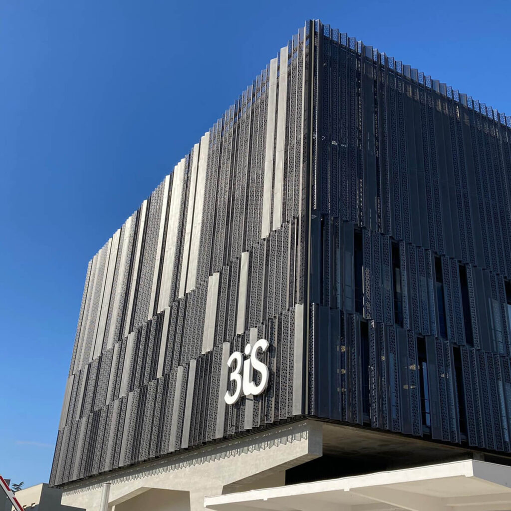

Mes études
Mon parcours scolaire et mes projets réalisés en école.

École 3iS
École 3iS Bordeaux 33000
3iS est une école supérieure privée dédiée aux métiers de la création, de la culture et de l'audiovisuel.
Parcours
- Lycée Saint-Joseph à Bressuire
Bac pro Artisanat et métiers d'art option communication visuelle plurimédia - 3iS
Prépa de 2025-2026 à 3iS Bordeaux - 3iS
Première année de CAV (Cinéma et Audiovisuel) 2026-2027 (FORMATION ACTUELLE)
Projets créés au cours de ma scolarité
J'ai pu alterner entre de nombreux postes dans plusieurs exercices. Je suis maintenant sûre d'apprécier plusieurs rôles autres que celui de monteuse dans le cinéma.
Lettre a la haine
Lettre à la Haine est un projet qui a été réalisé pendant ma période de prépa avec plusieurs élèves de différentes filières de 3iS (son, acting, CAV1). Le thème était de reprendre des personnages connus et de les faire écrire une lettre au Père Noël. Mon groupe a donc choisi les personnages du film *La Haine*. Mon rôle était celui de monteuse et d'opératrice son.
Cliché d'un adieux
Cliché d'un adieu est un film photographique réalisé en groupe de cinq personnes durant ma prépa. J'y ai occupé les rôles de réalisatrice et d'assistante montage. Ce film raconte l'histoire d'un homme ayant perdu sa compagne et qui décide de lui rendre hommage à travers leur passion commune : la photographie, mais un événement inattendu survient…
The Final Straw
The Final Straw a été réalisé à ma première année de CAV en groupe de 8 où mon rôle était Monteuse et Scripte. Amanda une jeune femme et son compagnon Damien décide d'organiser un dîner au restaurant. Mais tout ne se passe pas comme elle l'aurait espéré..